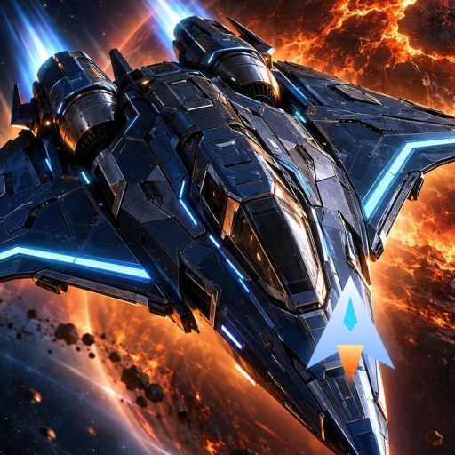

Космический Странник
Ваш корабль нашли дрейфующим у Гефеста — без памяти, без имени и с пустым трюмом. Начните с одного шахтёрского корабля и постройте торговую империю в огромной звёздной системе.


Об игре
Неспешная экономическая стратегия: здесь важны не реакция и меткость, а расчёт — где добыть, куда отвезти и кому продать.
Добывайте
Отправляйте корабли к планетам и спутникам за железом, медью и другими рудами. На каждой планете свои ресурсы.
Торгуйте
Цены на станциях живые: они зависят от спроса и предложения. Покупайте дёшево, продавайте с выгодой.
Расширяйте флот
Корабли разных типов и четырёх классов размера. Улучшайте их исследованиями и управляйте простыми командами.
Исследуйте
Планеты и спутники раскрываются, только когда вы до них долетите. Разведчики показывают опасные зоны.
Опасные маршруты
Пираты и одичавшие шахтёрские дроны. При перехвате решайте сами: драться, уйти на форсаже, отдать груз или откупиться.
Сюжет и звания
Главы истории Странника, задания начальников станций, звания и Летопись — путь от Гефеста к далёкому Абандону.
Обновления
Что менялось в игре.
Версия 0.2 — выход на Android
- Версия для Android в RuStore
- Обучение управлению камерой с анимированными подсказками
- Управление для сенсорного экрана
- Русский язык для игроков из России и стран СНГ, английский — для остальных
- Плавное движение спутников и камеры